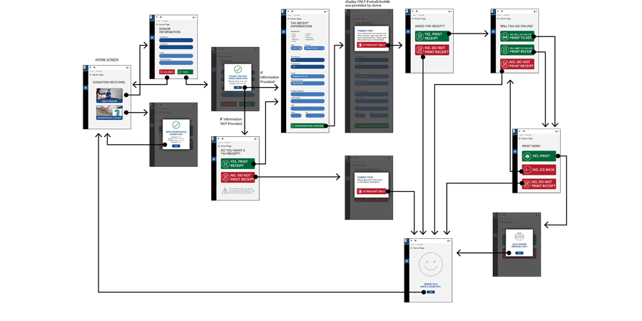
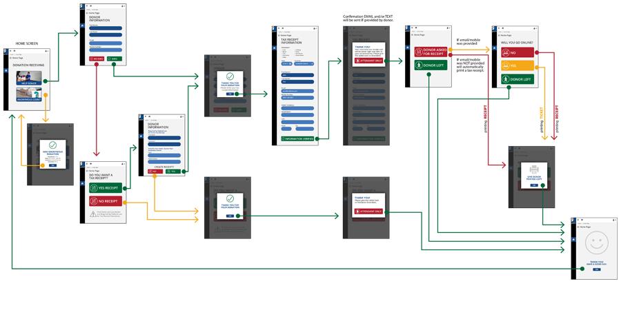
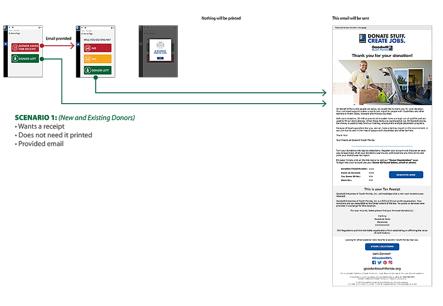
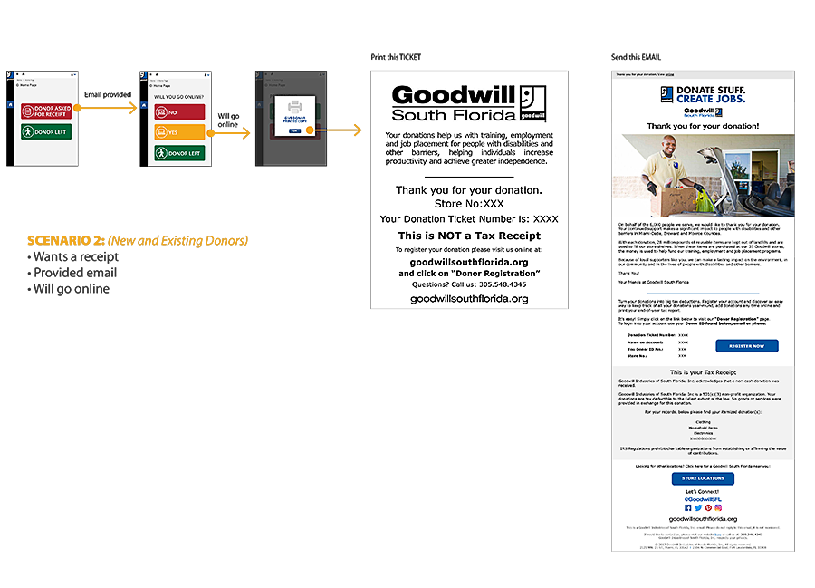
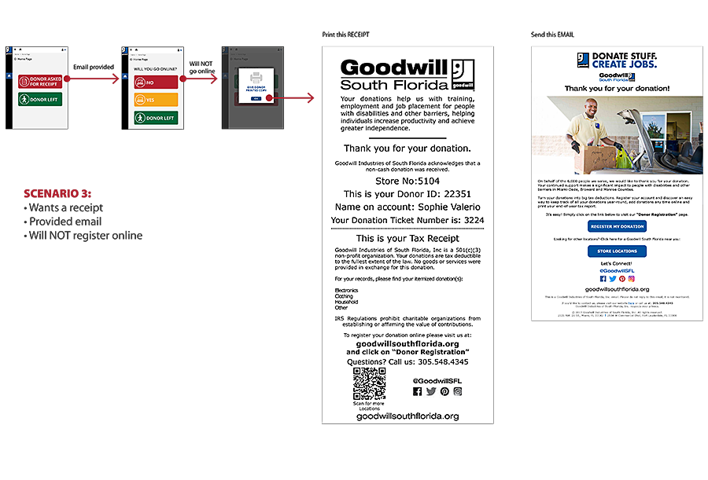
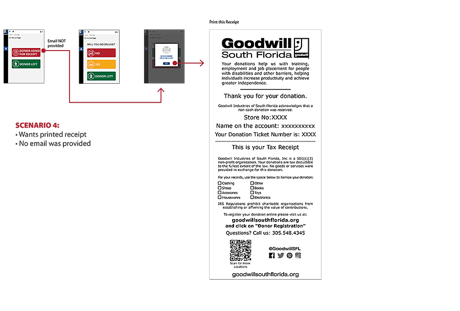

Goodwill Industries of South Florida is not just a place to donate used household goods and clothing. They also are committed to rehabilitate and train people with disabilities to help them be productive members of society. With more than 3000 employees, Goodwill is one of Miami-Dade Counties largest employers.
Even with such impressive presence, Goodwill didn’t have a centralized system to record and manage all the donations they received on their 50+ locations. These transactions were going to be saved on a centralized location making it easier to management and C-level executives obtain reports and be able to forecast more accurately. Goodwill knew there were other software already built to help them manage their donations. But they wanted to build their own system they owed to avoid depending on a 3rd party company.
I started to get involved in the project was while doing the first pilot test at a store with real donors. It was a .NET application built totally custom for client’s needs. When I first saw the beta version of the application I knew the UX and UI could be greatly improved. But I was new to this project and I knew they had invested a lot of time and money on this application. Because it was the first time having a real-life test, we quickly started to get a lot of feedbacks from employees, donors, and management. Some good, some bad. Before officially implementing it on other stores, we had to revisit the entire user flow. That was my opening to start putting my skills to add value to the application.
I quickly notice management had some key goals for this application:
After speaking with VPs, Management, Employees, Donors, .NET Developers, and spending a lot of time testing the application on their staging environment, I knew I was ready to help improve the User Experience for the Donation Count Application.
One of the first thing I realized was the confusion among the management team about the different user flows of the application. There were also confusion about the actions triggered by each of those different flows. Before I did anything, I did a diagram to reflect the flow as I understood it.
That graphical representation for the current user flow helped management team, for the first time, speak in the same language. It also made it clear we were not providing all the options needed by their marketing department. After several revisions, we agreed on the correct user flow we had to provide the users.
Once the user flows were approved, I directed the conversation to the actions triggered by each of those user flows. With the use of graphical representation, I was able to get the entire team to agree on the actions that will be triggered by any of the 4 possible scenarios
   Since we were revisiting the entire process, I took that opportunity to simplify the UI used on the application. Following the line to make it easier for the attendant to follow the ideal script, I made the home screen even easier to use for even non-computer savvy employees.
They loved it. So I proceeded to present the user flow in an interactive way.
The implementation was a success. During the 2 months, they deployed it on 18 stores. From 7,008 donations, they collected 2,424 emails. Marketing and C-Level executive were ecstatic to see they increased the percentage of emails they were collecting – from 5% to 34.6%! And because all the donations were being stored on a centralized database, we continued integrating other departments into the system like Inventory, Production Reports and Tracking of the Serial Numbers used to transfer inventory between stores.